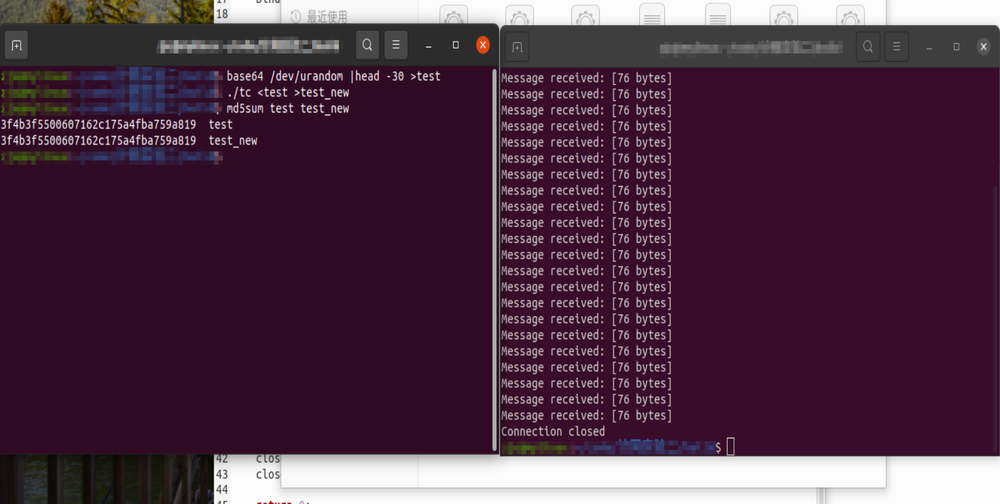
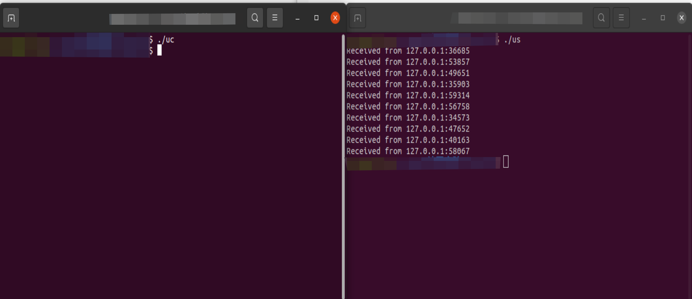

计算机网络 第二次实验
第二次实验 TCP/UDP通信程序设计
¶一、TCP通信
-
客户端
为了持续输入要发送的数据，同时接收服务器回射的文本信息，将原代码中发送数据部分修改如下:
1
2
3
4
5
6
7
8
9
10/* 发送数据 */
while(1){
char msg[50000]="";
gets(msg);//读取要发送的信息
if(strlen(msg)<=0) break;//只键入回车（空白输入）时退出
Send(sockfd, msg, strlen(msg), 0);
char buf[TCP_BUF_LENGTH]="";
Recv(sockfd,buf,TCP_BUF_LENGTH,0);//接收回射数据
printf("%s\n",buf);
}同时，原代码在运行程序时必须先运行ts再运行tc，否则客户端Connect失败后就会直接退出。因此，修改连接部分如下：
1
2while(connect(sockfd, (struct sockaddr *)&server_addr, sizeof(struct sockaddr))==-1);
//这里可以执行个sleep函数避免过于频繁的执行连接操作占用内存，不过实验中影响不大 -
服务器端
服务器端只需要让其持续运行下去不断接收信息，再增加一个将信息回射的操作即可，因此只需修改接收数据部分：
1
2
3
4
5
6
7
8
9
10
11
12
13/* 接收数据 */
char buf[TCP_BUF_LENGTH];
while(1){
size_t pkt_len = Recv(client_sockfd, buf, TCP_BUF_LENGTH, 0);
if (pkt_len > 0) {
buf[pkt_len] = '\0';
printf("Message received: [%zu bytes]\n",pkt_len);
} else {
printf("Connection closed\n");
break;//接收到空信息时退出
}
Send(client_sockfd,buf,strlen(buf),0);//回射信息，目标应该是client的套接字
}最后发送和接收生成的随机代码，获得的结果如下图所示
可以看到两个文件的md5加密是相同的，即程序确实完成了回射和接收回射功能。
¶二、UDP通信
-
客户端
根据要求，需要改成用Connect和Send替换Sendto，同时通过循环创建10个套接字给服务器发送信息
1
2
3
4
5
6
7
8
9/* 发送数据 */
for(;i<10;i++){
sockfd = Socket(AF_INET, SOCK_DGRAM, IPPROTO_UDP);//创建套接字
Connect(sockfd, (struct sockaddr *)&server_addr, sizeof(struct sockaddr));
char *msg = "hello";
//printf("Send message: %s[%zu bytes]\n", msg, strlen(msg));
Send(sockfd, msg, strlen(msg), 0);
close(sockfd);//因为只用发一次，所以每次用完就要关掉
} -
服务器端
根据要求，服务器端需要将客户端的ip地址与端口号显示出来，因此修改接收数据处代码如下：
1
2
3
4
5
6
7
8
9
10/* 接收数据 */
struct sockaddr_in client_addr;
int client_addr_len = sizeof(client_addr);
for(;i<10;i++){
char buf[UDP_BUF_LENGTH];
size_t pkt_len = Recvfrom(sockfd, buf, UDP_BUF_LENGTH, 0, (struct sockaddr *)&client_addr, &client_addr_len);
buf[pkt_len] = '\0';
//printf("Message received: %s[%zu bytes]\n", buf, pkt_len);
printf("Received from %s:%d\n",inet_ntoa(client_addr.sin_addr),ntohs(client_addr.sin_port));//ip和端口号
}这里用到了两个辅助函数：
inet_ntoa和ntohs，其中前者是用来将类型为inet_addr类型的网络二进制地址转换为用’.'进行分割的常见ip地址形式。由于接收到的端口号是用htons转换为网络字节的，所以要想显示我们还需要用ntohs将其转换回来。最后程序运行效果如下：
可以看到每次返回的ip都是我们配置的ip地址，而端口不同，这是因为我们没有对发送方的套接字进行bind操作，端口均是随机分配的。
¶三、TCP实时通信程序
fork函数可以创建一个子进程，与父进程同时执行，子进程和父进程通过fork()的返回值区分，父进程的fork()返回子函数的fpid（从1依序递增），而子进程的fork()返回0。如果我们设定两个进程一个接收一个发送，就可以完成终端的实时通信。具体实现思路如下：
1 | /*tcp实时通信*/ |
这里tcp客户端与tcp服务器端与前面的TCP通信程序基本相同，不过可以删除掉服务器回射以及客户端接收回射的部分，再在服务器端部分整理一下该print的部分即可。
但是还有一个显然的问题，我们需要两个服务器运行在不同的端口上，因此在net.h中添加以下代码：
1 |
接下来，我们将上面的实时通信代码配置两份，并交叉设置其端口：
- 代码1
- 客户端 ：目标为TCP_SERVER_PORT
- 服务器端：服务器端口为TCP_SERVER_PORT1
- 代码2
- 客户端 ：目标为TCP_SERVER_PORT1
- 服务器端：服务器端口为TCP_SERVER_PORT
此时运行这两份代码，就可以实现实时通信。如下图所示
注意，由于此时发送与接收同时开始运行，因此发送端的connect函数的重试是不可缺少的
另外一个值得注意的地方是子进程与父进程分别负责什么部分，结果是不同的。最终的代码中由父进程负责发，子进程负责收，那么当A方发送完毕，A的发送进程和B的接收进程同时结束，因为接收是子进程，因此终端此时不会接管输入框，B的发送还可以继续，而A方的接收进程此时也还在运行，则B->A的通信还是可以继续。
但是如果父进程负责收，子进程负责发，那么当A方发送完毕，B方的接收进程（父进程）结束，B的输入框将会被交还给终端，因此无法再继续实现B->A的通信，此时只能ctrl+c强行终止A的接收程序。如下图所示
¶总结
-
思考题1：
1
2
3
4
5
6
7
8
9
10
11struct sockaddr_in {
short sin_family;
u_short sin_port;
struct in_addr sin_addr;
char sin_zero[8];
};
/*以下是一个实例*/
struct sockaddr_in server_addr = {0};
server_addr.sin_family = AF_INET;//IPv4协议
server_addr.sin_addr.s_addr = inet_addr("127.0.0.1");//IP地址
server_addr.sin_port = htons(8001);//端口为8001- 这里的sin是sockaddr_in的缩写
sin_family是套接字的协议族，如AF_INET表示TCP/IP协议（ipv4），AF_INET6可以用来表示ipv6协议。sin_port表示端口号，但是是经过htons(port)函数转换过后的网络字节顺序。sin_addr表示ip地址，这里也需要使用函数inet_addr(ip_addr)将平常的点分十进制表示法转换为网络字节顺序的二进制数据。sin_zero用作占位，使sockaddr_in的长度与sockaddr相同。我们可以计算一下：sockaddr的长度为$2+14=16$Byte，而sockaddr_in除去占位时长度为$2+2+\frac{32}{8}=8$Byte，因此sin_zero恰好为$8$Byte。
-
思考题2：
- 非连接的客户端在建立socket时直接创建一个套接字，指定其协议族、类型、传输协议即可。
- 面向连接的客户端在同样建立socket以后还需要先使用
connect()函数与服务器端建立连接后才可以进行数据的收发。
-
思考题3：
- 非连接的客户端在收发数据之前不需要建立连接，并且需要使用
sendto()函数和recvfrom()函数发送、接收信息，前者需要带上目的地址，而后者会返回发送方地址。 - 面向连接的客户端在收发数据之前需要先建立连接，并且只需要使用
send()和recv()函数收发信息。
- 非连接的客户端在收发数据之前不需要建立连接，并且需要使用
-
思考题4：
- 面向连接的通信的优点是稳定和可靠性。它能保证数据的稳定、有序传输，还能在一定程度上进行拥塞控制。它的缺点是占用资源较多（如在服务器端需要为每个客户分配对应的响应套接字）、建立连接需要时间。它适合工作在传输数据量较大、追求稳定通信或者噪音特别大的场合。如精密传感器等与主机的通信、文件的下载等。
- 无连接通信的优点是传输速度快。它不需要提前建立连接，不需要接收方的确认，因而可以用更大的速度传输数据。它的缺点是传输数据不稳定、无反馈，对于数据丢包、乱序等情况完全无法处理。它适合工作在实时通信、短时间、小数据量的通信情况。如视频聊天、网络电话，以及对服务器的一些小数据量的请求（如DNS）等。
-
思考题5：
实验中使用socket工作在阻塞方式。**阻塞方式与非阻塞方式的不同在于它们对于一些函数的响应方式不同。**这些函数主要有
send(),recv(),sendto(),recvfrom(),accept()。对于工作在阻塞方式的socket，调用这些函数时将会阻塞在原地直到任务完成或者有错误发生。例如，accept()函数在阻塞时会一直等到有客户连接才继续下面的程序，而非阻塞时只接收被调用时存在的客户连接，若没有则立刻执行下面的程序。recv()函数在阻塞时会一直等到收到消息，而在非阻塞时若无消息则立即返回。 -
我的收获与总结：
- 这次实验完成了TCP和UDP通信的过程，使我对TCP、UDP协议、套接字和它们的程序实现有了更深的印象。同时，也学习了用linux编译C语言代码的方法，以及使用makefile进行批量重复的操作。最后，学习了linux操作系统unistd.h头文件里的fork()实现多进程编程的方法。
下面两个补充是基于思考题和平常以及实验过程中所见到的现象进行的进一步探究。
-
**对思考题3的一些补充：**实验中的UDP要求使用connect实现，但是实际上此时的UDP仍然是一个无连接的服务！
connect()函数的作用是为套接字设定了目的地址，但是并未与服务器建立连接，也就是说，**无论服务器端口有没有被监听，甚至有没有开启，connect(),send()函数都会正常的执行下去。**如果我们实验中先开启客户端，会发现客户端在服务器还未打开时就显示发送完毕，而服务器端显然收不到数据。 -
对思考题5的一些补充：
-
网上的资料说
connect()函数也会阻塞，但是经过测试发现，实验中的连接函数并不会阻塞，它在连接失败时会立即返回-1，并不会等待到连接的建立。 -
对于
send()和sendto()函数的阻塞可能不是很好理解，就像上面所说，服务器未打开时sendto()也可以正常运行，这是因为**这两个函数如同其他一些通信(例如单片机的串口通信)一样，功能仅仅是将信息送到发送区的缓冲栈中，而发送操作由系统自己完成。**因此它阻塞的条件是发送区的缓冲栈是否已满。因此当它们返回时，信息不一定已经被目标接收，甚至不一定已经发送出去了。 -
那么TCP怎么实现它的确认功能呢，毕竟数据还没被确认函数就已经返回了？这都交给系统内部自己完成。由于要发送的数据已经保存在缓冲区中，因此它可以在超时后重传，直到收到确认后再将数据删除，腾出缓冲区的空间来。也就是说，我们所调用的
send()函数其实与真正的发送过程还隔了一层。 -
对于除了C以外的某些语言，阻塞与非阻塞还有其他的区别。例如在python中写tcp通信时
1
buf=socket.recv(1024).decode('utf-8')
若配置在阻塞状态，那么它在收到数据之前不会以任何形式被阻止，除非整个程序被强制关闭，包括ctrl+c的强制停止都无法退出该函数。这对于调试过程是十分不便的，因此需要配置成非阻塞状态以保证有手段将其退出。